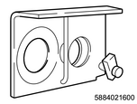
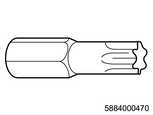
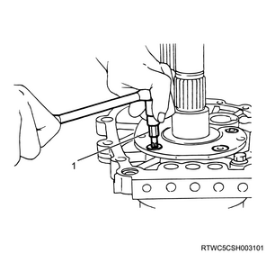

Reverse gear and 5th gear disassembly (MUA)
1. Main shaft snap ring removal
1. Remove the main shaft snap ring from the main shaft using a snap ring pliers.
2. Main shaft rear bearing removal
1. Remove the main shaft rear bearing from the main shaft using special tool.
Note
- The following applies to 2WD.
- Use an universal puller and main shaft end bearing remover.
SST: 5-8840-2027-0 - universal puller
SST: 5-8840-2155-0 - main shaft end bearing remover
- Universal puller
- Main shaft end bearing remover
Note
- The following applies to 4WD.
- Use an universal puller and main shaft end bearing remover.
SST: 5-8840-2027-0 - universal puller
SST: 5-8840-2158-0 - main shaft retainer remover
- Universal puller
- Main shaft end bearing remover
3. Speedometer drive gear removal
Note
- The following applies to 2WD.
1. Remove the snap ring from the main shaft using a snap ring pliers.
Note
- Remove the clip.
2. Remove the speedometer drive gear from the main shaft.
3. Remove the retainer snap ring from the main shaft.
4. Retainer removal
1. Remove the retainer from the main shaft.
Note
- The following applies to 4WD.
- Remove the oil seal collar at the same time.
5. Thrust plate removal
1. Remove the thrust plate from the main shaft.
2. Remove the thrust washer from the main shaft.
Note
- Remove the lock ball and the thrust washer.
6. Reverse idle gear removal
1. Remove the snap ring from the idle shaft using a snap ring pliers.
2. Remove the reverse idle gear from the intermediate plate.
Note
- Remove the idle shaft pin from the reverse idle shaft and remove the thrust washer and the reverse idle gear.
7. Counter bearing snap ring removal
1. Remove the counter bearing snap ring from the counter shaft using a snap ring pliers.
8. Counter 5th gear removal
1. Remove the counter 5th gear from the counter shaft using a puller.
Note
- Remove the counter 5th gear and the bearing from the counter shaft.
SST: 5-8840-2027-0 - universal puller
9. Counter reverse gear removal
1. Remove the counter reverse gear from the counter shaft.
10. 5th gear removal
1. Remove the 5th gear from the main shaft.
11. 5th block ring removal
1. Remove the 5th block ring from the main shaft.
12. Needle bearing removal
1. Remove the needle bearing from the main shaft.
Note
- Remove the two-piece type needle bearings.
13. Main shaft removal
1. Remove the main shaft from the intermediate plate using special tool.
Note
- Install the main shaft and the counter gear to the holding fixture.
- Install the holding fixture to the base.

SST: 5-8840-2160-0 - holding fixture

SST: 5-8840-0003-0 - base

- Holding fixture
- Base
Note
- Connect the 3rd - 4th synchronizer assembly and the 3rd gear.
- Connect the 1st - 2nd synchronizer assembly and the 1st gear.

- Holding fixture
2. Remove the nut from the main shaft using special tool.
Note
- Remove the main shaft nut from the main shaft with the main shaft nut wrench.

SST: 5-8840-2156-0 - main shaft nut wrench
- Main shaft nut wrench
14. Reverse gear removal
1. Remove the reverse gear from the main shaft.
Note
- Insert a screwdriver between the reverse gear and bearing plate and remove the reverse - 5th synchronizer assembly, reverse block ring and reverse gear at the same time.
15. Reverse needle bearing removal
1. Remove the reverse needle bearing from the main shaft.
16. Bearing plate removal
1. Remove the bearing plate from the intermediate plate using special tool.
Note
- Remove the bearing plate by using the TORX bit wrench.

SST: 5-8840-0047-0 - torx bit wrench

- TORX bit wrench
17. Snap ring removal
1. Remove the bearing snap ring from the main shaft using a snap ring pliers.
Note
- Hold the snap ring in a open condition with the snap ring pliers, and slide the intermediate plate backward to take out the intermediate plate and snap ring.
- Snap ring pliers
- Snap ring